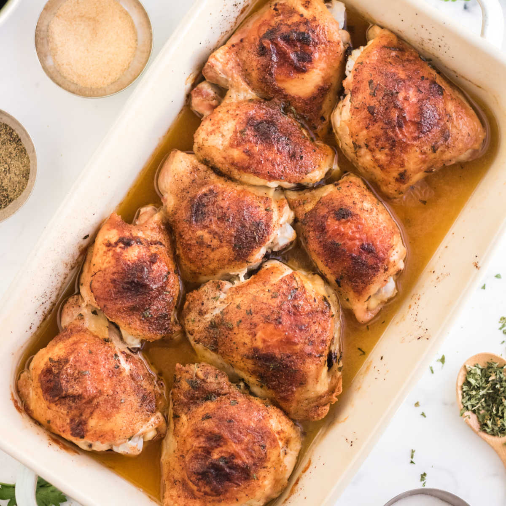

Easy Bake Chicken Thighs

Ingredients
- 8 Chicken thighs
- 2 Tablespoons olive oil
- 1 Teaspoon salt
- 1/2 Teaspoon pepper
- 1/2 Teaspoon paprika
- 1 Teaspoon garlic powder
- 1 Teaspoon dried parsley
Steps
- Preheat oven to 400 degrees F. Lightly coat baking dish with cooking spray.
- Next, brush olive oil over the chicken thighs. Then combine the seasonings in a small bowl.
- Sprinkle the seasoning blend over both sides of the chicken thighs before placing them in the baking dish.
- Finally, bake in the oven for 30-40 minutes.
NOTE: internal temperate should read 165 degrees.
Other Recipes